| 日付 | 2012年8月25日（土） - 2012年8月26日（日） | ||||
|---|---|---|---|---|---|
| 山域 | 八ヶ岳 | ||||
| メンバー | 家族（妻、長女・1歳） | ||||
| 山行形態 | 子連れ1泊2日小屋泊 | ||||
| アクセス | 車 | ||||
| ルート (Map) |
|
2日目
昨夜はあまり眠れなかったが、今日は早起きする必要がある。
5時半ごろに外に出ると、ちょうど日の出の時間だ。
樹林帯の中なので、あまりはっきりとは見えない。
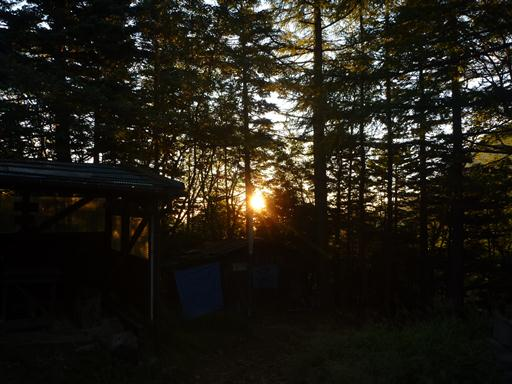
硫黄岳は朝日を浴びて赤く染まっている。
もう少し展望の良いところまで行きたいのだが、朝食が5時半からのため仕方なく小屋に戻る。
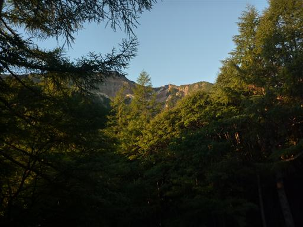
朝食をとったら天狗岳に向けて出発。
その前に少し寄り道して硫黄岳を眺めることにする。
日はもうすっかり昇っている。今日も快晴だ。
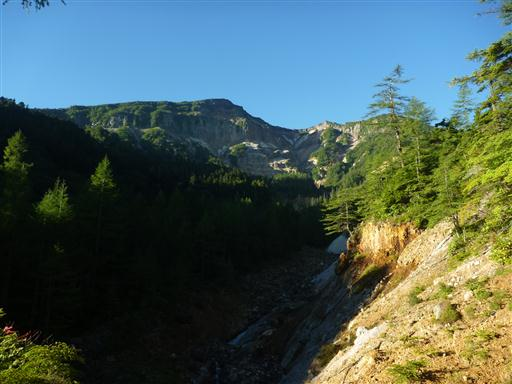
白砂新道という道を通って天狗岳を目指す。最初からなかなかの急登だ。
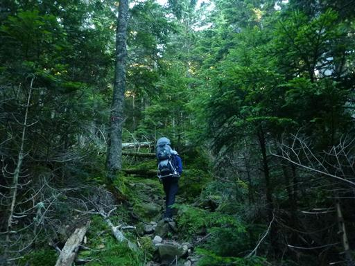
太陽はもう高く昇っているのに、針葉樹林帯の中は薄暗い。
ほとんどの人は夏沢峠を目指すようで、こちらの道はあまり人影がない。
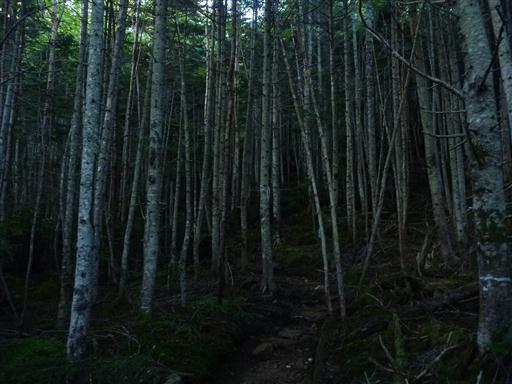
途中で東側の展望が広がる。いくつもの山々が折り重なっていて非常に美しい。
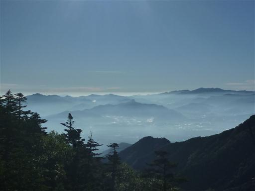
1時間ほど登ると樹木が少なくなって展望が開けてくる。
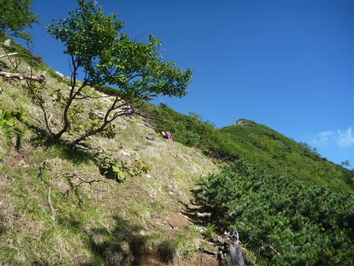
手前の岩壁が稲子岳、背後の小さな岩峰がニュウだ。
背景に見えているのは浅間山。
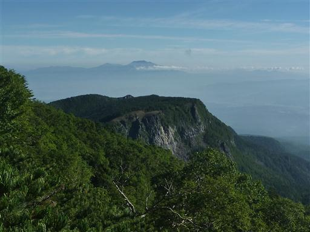
足元に見えているのは昨日訪れたミドリ池の辺りだ。
なぜか濃い緑と薄い緑が縞模様を造っている。
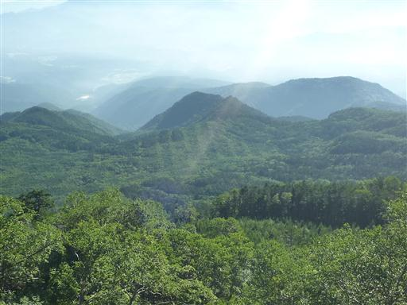
急な坂を登りきると稜線に到達する。
目の前に聳えるのはこれから目指す東天狗岳だ。
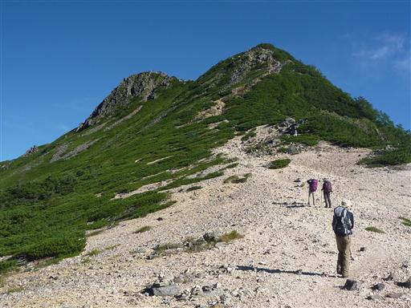
逆方向の南側の展望。夏沢峠方面から歩いてくる人がちらほらと見られる。
辺りは白砂が広がる素晴らしい展望の場所だ。
白砂が広がる場所に出てくるので白砂新道と名付けられているようだ。
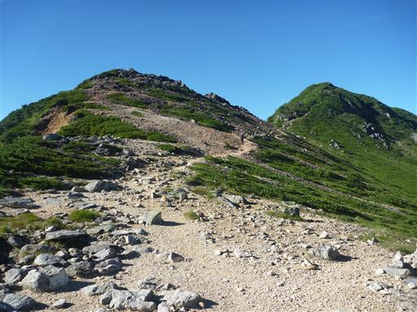
東天狗岳に続く斜面を登っていくと展望がさらに広がってくる。
振り返ると眼下に緑が広がる緩やかな斜面、
硫黄岳の背後には赤岳と阿弥陀岳の頭が見えてくる。
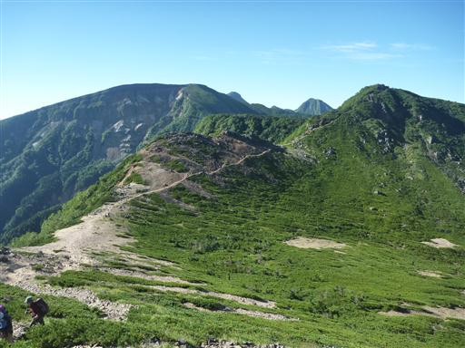
左手には中央アルプスが連なっている。
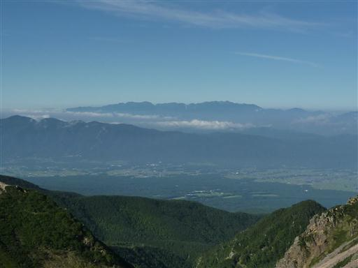
東天狗岳への最後の登りは岩稜地帯が続く。岩は多いが危険な場所はない。
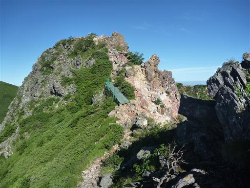
登山道の側に小さな岩峰が突き立っている。
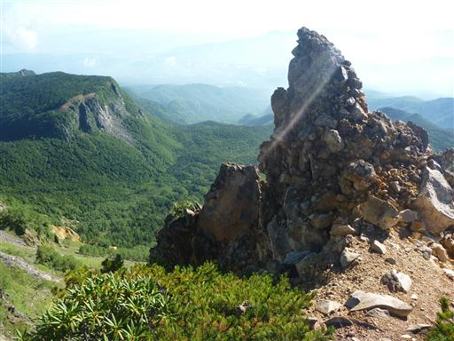
東天狗岳山頂に到着。山頂からは360度の展望が広がる。
北方には北八ヶ岳の緑濃い樹林帯がどこまでも広がっている。
いくつものピークがあるはずだが蓼科山以外はほとんど目立たず、ゆったりとした地形が続いている。
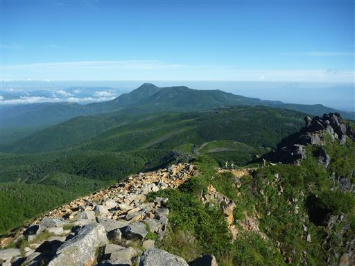
すぐ目の前には西天狗岳が見えている。西天狗岳の方が僅かに標高が高い。
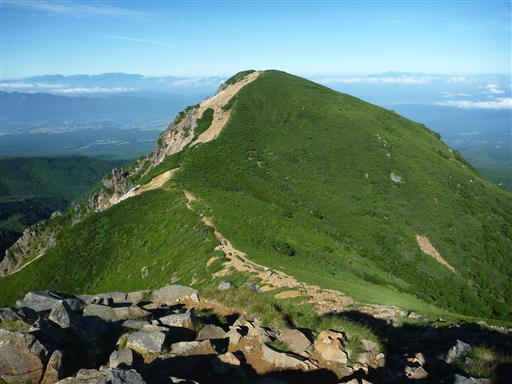
ザックを東天狗岳に置いて西天狗岳を目指す。
辺りは背の低い樹木のみで展望は非常に良い。
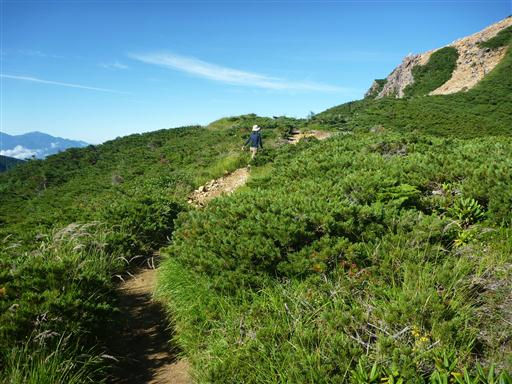
振り返ると東天狗岳が高く聳えている。
丸い形の西天狗岳に比べると格好良いピークだ。
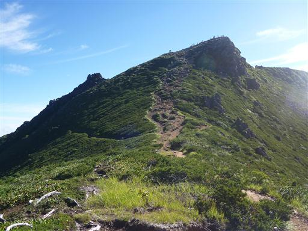
西天狗岳に続く最後の登り。頭上は真っ青だ。
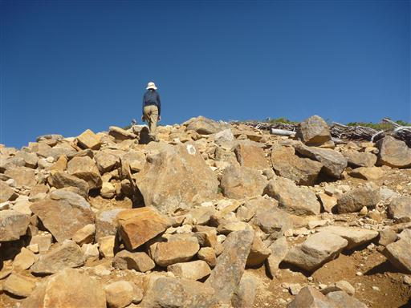
西天狗岳山頂に到着。標高2646m。
北八ヶ岳の最高峰だ。
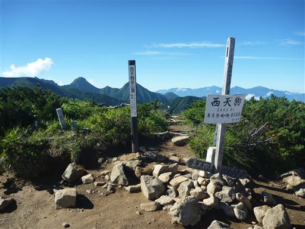
東天狗岳には劣るが、こちらの山頂からも素晴らしい展望が広がる。
赤岳と阿弥陀岳の鋭いピーク、左手のギザギザは横岳だ。
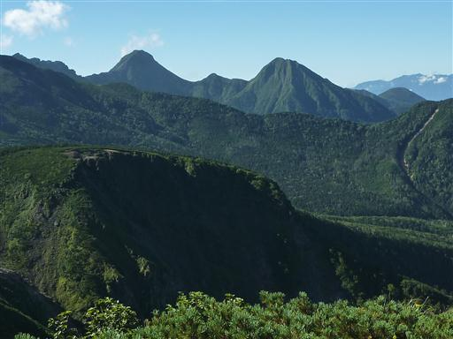
八ヶ岳主峰の右手には南アルプスの山々が見えている。
左から北岳、甲斐駒ヶ岳、仙丈ヶ岳。
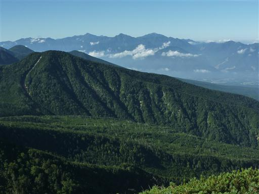
そして、はるか遠くに見えているのは北アルプスの穂高岳だ。
この場所からは日本三大アルプスを見渡すことができる。
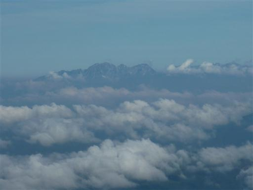
展望を満喫したら東天狗岳に引き返す。
列をなして歩いている登山者の姿が遠くに見える。
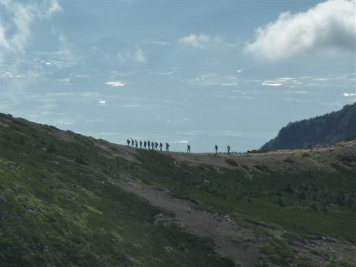
東天狗岳に戻ったらザックを回収してニュウを目指す。
振り返って東天狗岳東面の絶壁を仰ぎ見る。
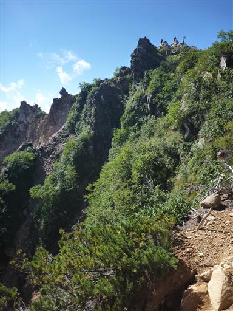
足元にトウヤクリンドウが咲いている。残念ながら花は閉じられている。
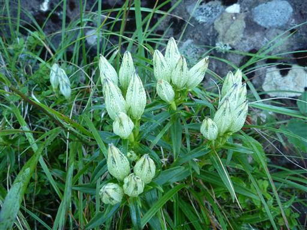
前方には緩やかな斜面と絶壁が繰り返す不思議な地形が広がる。
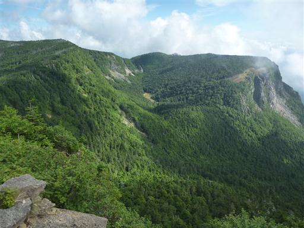
巨岩が転がる岩石地帯と樹林帯の中の道が交互に現れる。
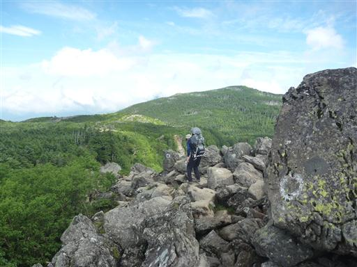
登山道は所々ぬかるんでいて少々歩きにくい。
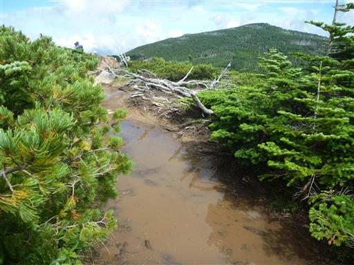
目の前に広がる斜面には、いくらか縞枯現象が見られる。
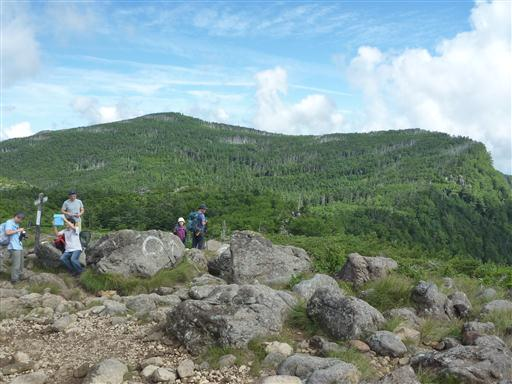
まだ9時半なのに、雲が上がってきてあっという間に視界を隠してしまう。
天狗岳で素晴らしい展望を満喫できたのは幸運だった。
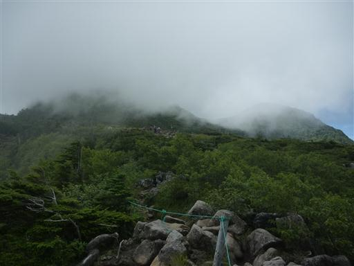
中山峠に到着。ここは天狗岳の最高の展望台だ。
硫黄岳はすでに雲の中、まもなく天狗岳も雲の中に隠れてしまった。
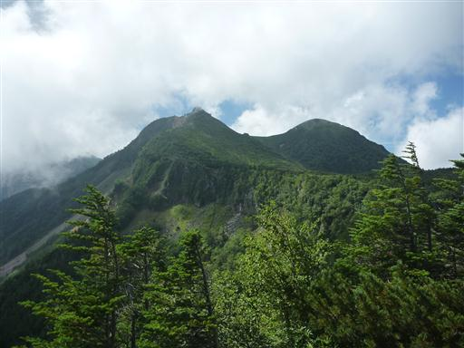
縞枯れ現象が見られる明るい樹林帯の中を歩いていく。
中山峠から先は人が少なくなると思っていたが、案外人通りが多い。
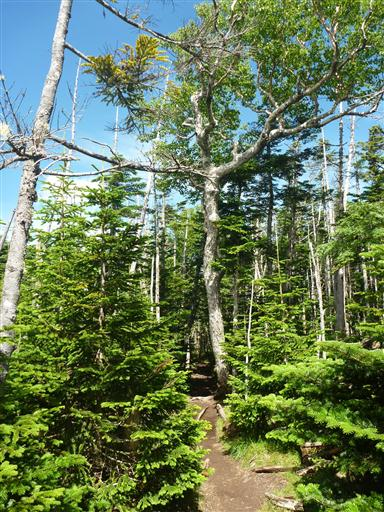
眼下に小さな凹地があって裸地化している。
そこに至る登山道はないが、しらびそ小屋方面から訪れる人はいるらしい。
テントを張ると気持ちよさそうな場所だ。
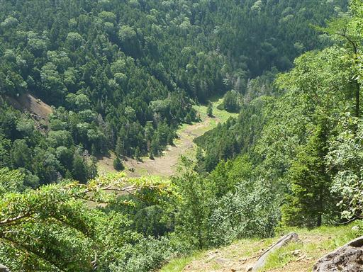
ニュウと呼ばれる小岩峰に到着。岩の上は多くの登山者であふれている。
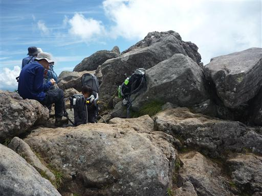
だいぶ雲が広がってきたが、ここからも素晴らしい展望が望める。
眼下には1年前に訪れた白駒池が見えている。
少々狭いがここで昼食をとることにする。
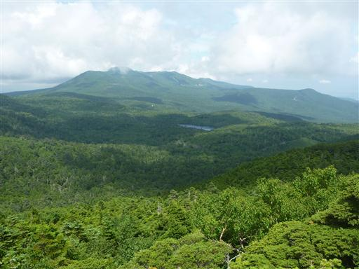
昼食をとったら下山開始。岩峰の下は北八ヶ岳らしい苔生した世界が広がる。
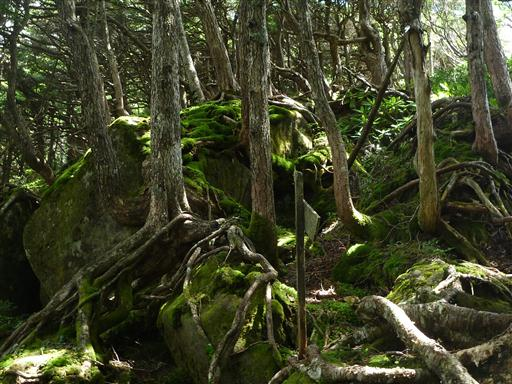
この辺りはなぜか幼木が多い。
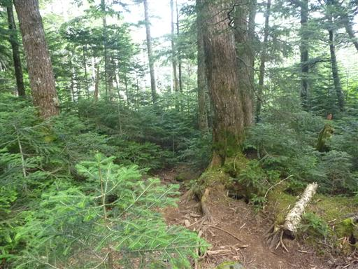
麦草峠への道を分けると、登山道は藪っぽくなる。
こちらの道を歩く登山者は少ないようだ。
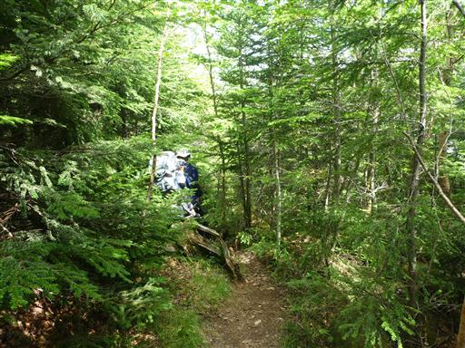
登山道は途中でシャクナゲ尾根に乗る。
名前の通りシャクナゲが密集している地帯があり、シャクナゲのトンネルができている。
なかなか長い登山道で、途中で休憩を取りながら下って行く。
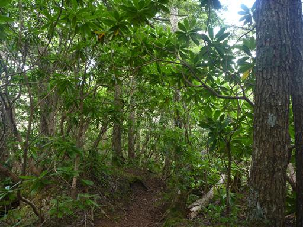
駐車場に無事下山。
麦草峠への分岐点から先の登山道では誰とも出会うことはなかった。
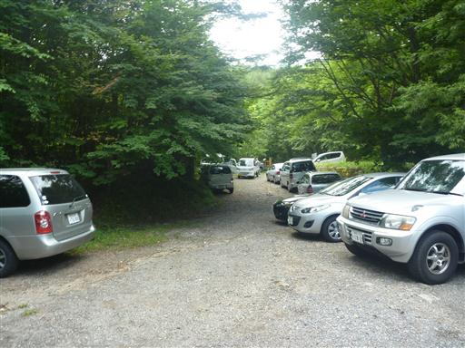
最後に灯明の湯に立ち寄って帰ることにする。
帰りは寝不足の中、中央道で35kmの渋滞にはまってしまい
体力的にはしんどい山行となってしまったが、最高の展望を満喫することができた。
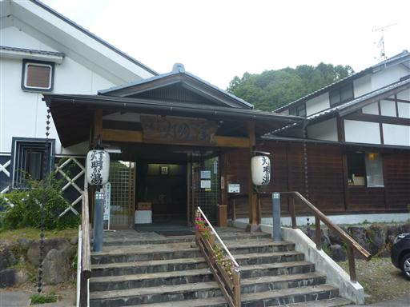